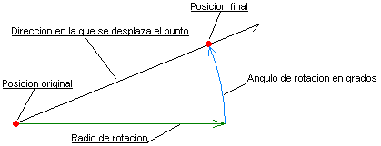

| dx_System_class: MATH_RotatePoint |
Calcula la rotación de un punto a partir de un radio y un Angulo.
Public Sub MATH_RotatePoint( X As Long, Y As Long, Radius As Long, Angle As Single )
Esta función es idónea para calcular movimientos de coordenadas en ángulos y distancias. El funcionamiento esta descrito en el siguiente grafico:

Proyecto dx_lib32 Descripción Clase dx_System_class Descripción dx_System_class Propiedades dx_System_class Metodos MATH_GetAngle MATH_IntersectRect